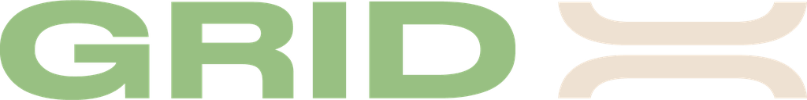

The Only Battery You Will Ever Need.
Pre-booking opens 12 October, 12 PM. Shipping across India.
Pre-book yours
Pre-booking opens 12 October, 12 PM. Shipping across India.
Pre-book yoursEngineered with intent. Built on the PowerPod Platform™.
11% lighter than Gen1, and every stair will thank you. The grip is bolted into the cap. Your hand finds it without looking.
The grip is our mark. It always was. The display sits where the two curves cross, so the pod can tell you where it stands before your phone does.
Under the seat while you ride. Up the floors when you are done. Any socket, anywhere, is a charging point. Full in 2.5 hours, where Gen1 took 4.
GPS in the pod, and theft protection around it. Your live location, shared in a tap. Synced to our servers, and to your phone over Bluetooth.
Click to experience
82 readings every 3 seconds, where Gen1 sent 26. Every ride, every charge, every cell, at your fingertips.
Click to experience
A 5-year warranty, with at least 70% of its capacity still there at the end of it. We meant it about the only one you will ever need.
Designed, engineered and tested in India, by Indians. Every curve, every circuit, every line of code.
Pre-booking opens 12 October, 12 PM. Shipping across India.
Pre-book Gen2